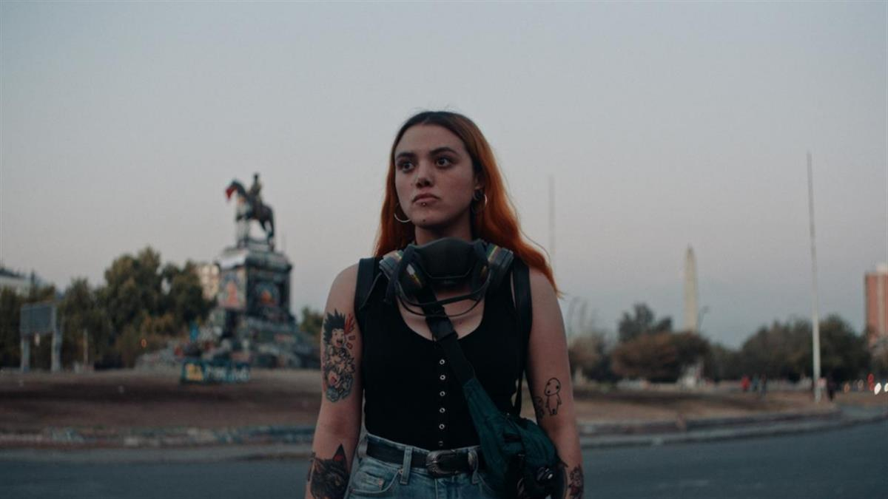

Franz Böhm, director of Dear Future Children. (Kit Lee)
CLIMATE|#Youth activism|INTERVIEW
Published on 05 March 2021, 05:57. Updated on 05 March 2021, 11:00.
Dear future children, ‘a film about young activists made by young filmmakers’
Twenty-one year old filmmaker Franz Böhm travelled to Uganda, Chile and Hong Kong to follow three young activists in their battles for the environment, against inequality and for democracy. Dear Future Children is a film about his generation.
Hilda paces around in circles in a glass-walled lobby. Absorbed in her notes, she waves one hand as she reads through her speech. She looks up and anxiously takes a deep breath. In a few moments, she will be calling for urgent climate action at the C40 World Mayors Summit in Copenhagen.
In another scene, we see Rayen blankly staring at flyers of the fallen victims of Chile’s 2019 protests. “I don’t want to be the next one on this wall”, she says. The camera later on is pointed at Pepper as she crouches down with other protesters hiding behind their umbrellas as shots are heard in the distance in the streets of Hong Kong.
The German-British-Austrian documentary Dear Future Children depicts the hopes and dreams, but also the fears and doubts of three female activists, fighting to change the world.
The director, Franz Böhm, was only 13 years old when he started making films. From the first day he walked on a set, he knew that he wanted “to shape the film industry with the values of my generation”. As his latest film makes its international premiere at the International Film Festival and Forum of Human Rights (FIFDH) this Friday, he tells us about a generation that wants a seat at the table.
Geneva Solutions: Why did you choose to make a film about youth activism?
Franz Böhm: In an increasingly busy and noisy world, where it gets harder to fully understand international conflicts, the effects of climate change and the wide-reaching consequences of social injustice, I think it is more important than ever to hear stories of individual human beings who are affected by that, and who are doing everything they can to fight against it.
By reading articles about let's say the conflict in Hong Kong, you can get an idea of what's happening there and it's important to do that, but hearing one individual story is even more powerful. That's where filmmaking can be an effective tool which can reach large audiences and contribute to social change.
GS: How was the experience of filming the protests?
FB: We did extensive preparation, lots of security sessions, training and research. We spoke to many people who have been on the protests, who shared their experiences with us and advised us. It was successful in the way that we got all the material that we wanted, and nobody got hurt physically. But filming the protests was a very brutal and staggering experience.
GS: In what way was it brutal?
FB: In these protests we saw people our age getting beaten up, getting arrested, getting shot with rubber bullets and tear gas grenades and having their life changed completely just because they are fighting for their cause. It wasn't until we came back from Hong Kong that we realised what sort of effect that has on us as filmmakers. The way people of our generation got treated there definitely shaped our team’s motivation for the film.
One of our team members in Hong Kong, nicknamed Catherine, helped us massively during the production. We were good friends and we often went for beers and talked about the current situation of the world and the state of democracy. We stayed in close contact, and then, at the end of last year, she got arrested because of her work as a first aider. She's now in prison for 10 years. We're not able to have any contact with her but she was one of us. And that's just something that we, as a team, think about quite a lot and won't ever forget.

Film still of Rayen.
GS: Do you think that making this film could help these activists who are risking their lives in any way?
FB: It would be a little arrogant to say that our film will necessarily help in any way. I hope that our film will provide a platform for these very potent and very powerful voices and we will work very hard to make this platform as wide, as strong and as loud as possible.
Our film is only one small part in this large debate about young activism itself. However, it is a part of it. It is a film about young activists made by young filmmakers. We are really listening to them and not filtering them. We don't have any experts commenting on their work. It’s just their very pure voice. I think it's important to also have that source of information.
GS: The movie highlights the doubts and fears that the activists go through. Pepper even seems to regret getting involved. Why show that part?
FB: When we first talked to our protagonists, we didn't know what we would be covering. At that time, many people thought perhaps activism is just a fun thing to do and no one is really having any disadvantages. We wanted to learn more about the true situation of young activists, and that includes many doubts and fears. We didn't want to turn a blind eye on anything.
Modern activism, specifically in Hong Kong, includes having lost or losing friends and family members, not being able to speak to your family about your role on the front line and seeing a lot of suffering. That's just part of the commitment, and it's important that, when we speak about activists, we know that they’re risking a lot, and that's not something fun and cool that they’re doing in their free time.
GS: After everything you witnessed, are you hopeful?
FB: I'm very impressed by my generation. It's absolutely incredible how they can use the current tools to make a change. I admire their braveness, their engagement, their encouragement, their ideas, their innovation. Let's see if that will really result in our generation having a seat at the table.
But I'm quite sure that our protagonists will do everything for it. If the world's next leaders are called Nakabuye Hilda Flavia, then I am more than hopeful towards the future.
Film still of Hilda at the C40 World Mayors Summit.
GS: Did you choose three women activists on purpose?
FB: Honestly, it just happened. We chose the ones who were most interesting, most engaged or were part of the movement since day one and with whom we had the best gut feeling. Pepper was just a brilliant choice because she’s a full-blooded activist and also quite young. Hilda was sort of the obvious choice because she’s one of the hardest working activists in Uganda.
GS: You said, “let's see if this generation gets a seat at the table.” In the film, Hilda gets that seat at some point. Is there a reason that the climate cause is getting more sympathy from world leaders than other issues?
FB: I wouldn't say that it was only Hilda who earned a seat at the table because the youth-led protests in Chile, also were able to successfully overturn the constitution. However, I think it's easier to understand and easier to act against climate change, because it is something that we can stand united against. In Hong Kong, it’s more of a tricky situation. Same goes for Chile.
I was also curious about these three activists who chose three different routes. Young activism can either be really successful, let’s say in Hilda's case in the way that she gets her voice heard, or it can be tremendously sad and heartbreaking, as in Hong Kong.
GS: What can you tell us about Pepper right now?
FB: We're speaking quite regularly. I can't tell you where she is. She has to restart her life completely. It's a tricky situation for her. The situation in Hong Kong and the reaction of the world community which is basically non-existent is heartbreaking.
Film still of Pepper.
GS: The pandemic halted or slowed down a lot of the movements, including in Hong Kong and in Chile. How do you see the future of activism in this context?
FB: Obviously, Covid-19 was challenging for many activists. They had to find new ways to make their voices heard, which I think worked quite well in some places and didn't in other places. However, as soon as the pandemic is over, activists won't forget the reason why they were on the streets in the first place and we see it right now in Myanmar, for example.
GS: Would you describe yourself as an activist?
FB: I hear this question quite a lot. I'm not fully sure yet about my final answer but I can only give you my current status. No, I'm not an activist by making a film about activists. I'm a filmmaker, just doing my job, which is in this case, giving a voice to young activists. I've seen activists at work and I have so much respect for that. I don't want to put myself in the same league where people like Hilda are. I would say I'm a filmmaker in the first place and we’ll see about the activist side, maybe that will change in the future.
Dear Future Children is available on the FIFDH platform to watch online from 5 to 14 March.
#Youth activism #FIFDH #Climate activism #protests
SOURCE: GENEVA SOLUTIONS